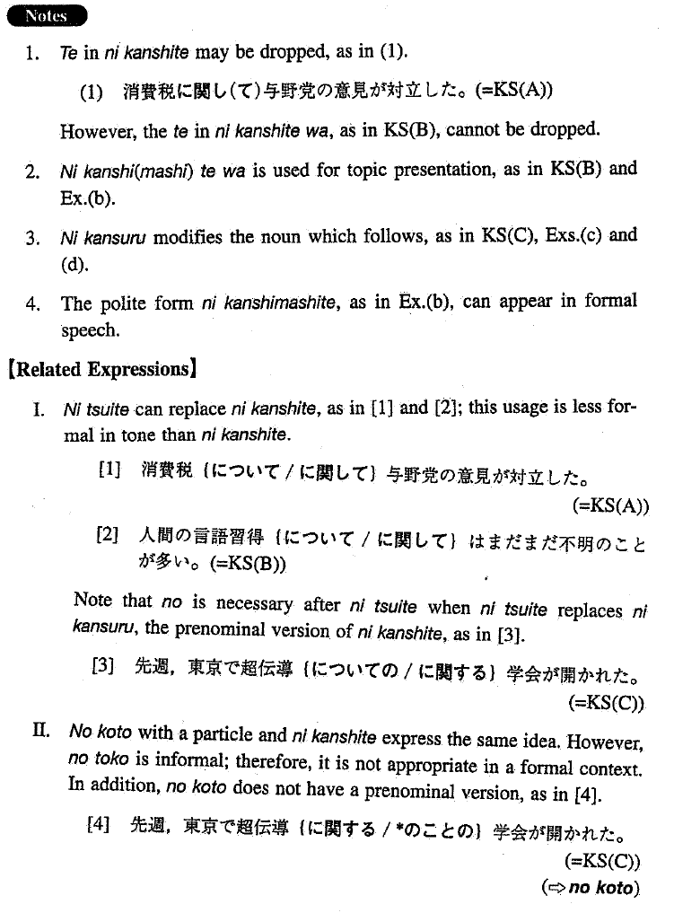

←
DoJG
→
に関して/関する
(I. 252)
Example sentences
(ksa).
消費税
に関して
与野党の意見が対立した。
With regard to the sales tax, the opinions of the leading party and the opposition parties conflicted.
(ksb).
人間の言語習得
に関して
はまだまだ不明のことが多い。
Concerning human language acquisition, there are still many unknown things.
(ksc).
先週、東京で超伝導
に関する
学会が開かれた。
Last week a conference on superconductivity was held in Tokyo.
(a).
その学会で吉岡氏の発表
に関して
多くの批判がなされた。
There was a lot of criticism concerning Mr. Yoshioka's presentation at the conference.
(b).
その件
に関しまして
は、まだ発表できる段階ではありません。
With regard to that issue, we are not yet at the stage where we can announce anything.
(c).
最近老人問題
に関する
記事が目に付く。
We see many articles about problems of the elderly these days.
(d).
大気汚染
に関する
報告書が委員会に提出された。
A report concerning environmental pollution was submitted to the committee.
Formation
(i)
Noun
に関して
首相の訪米
に関して
Concerning the Prime Minister’s visit to the U.S.
(ii)
Noun
に関する
Noun
首相の訪米
に関する
世論
Public opinion concerning the Prime Minister’s visit to the U.S.
